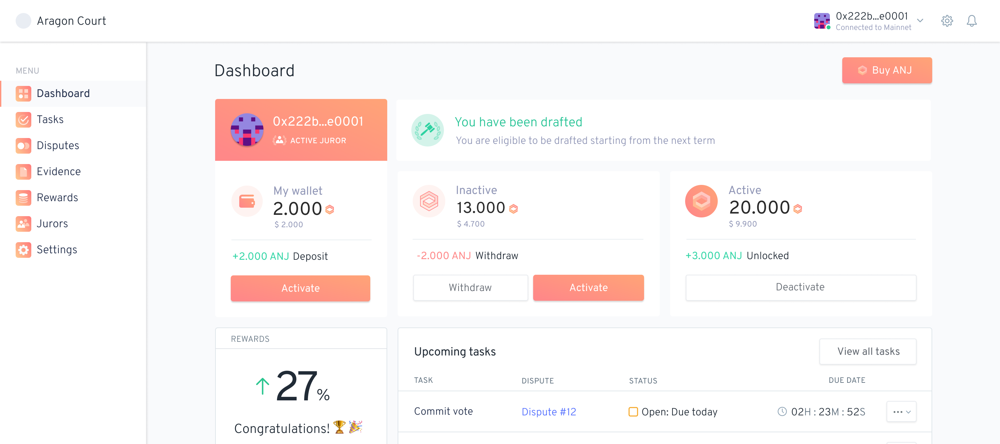
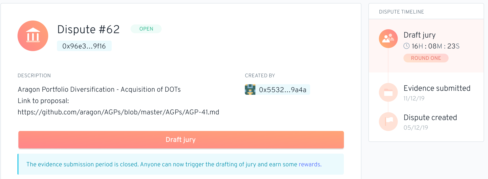
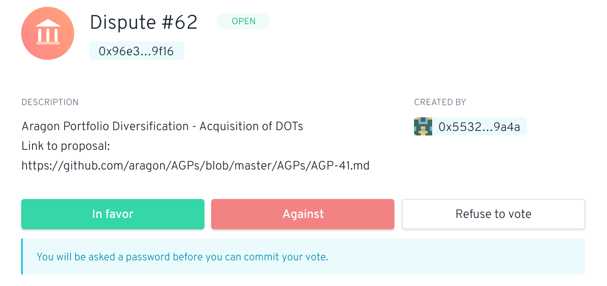
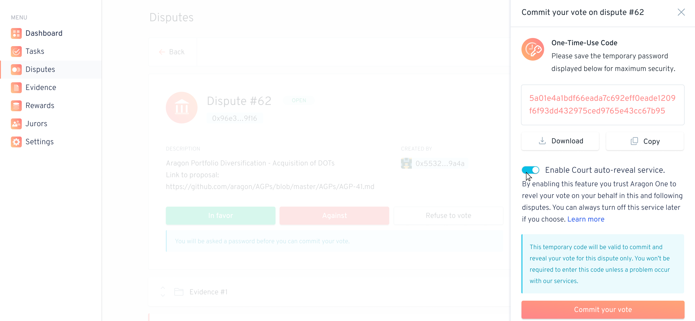
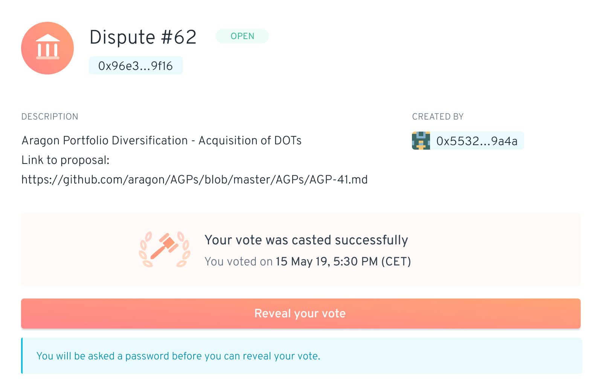
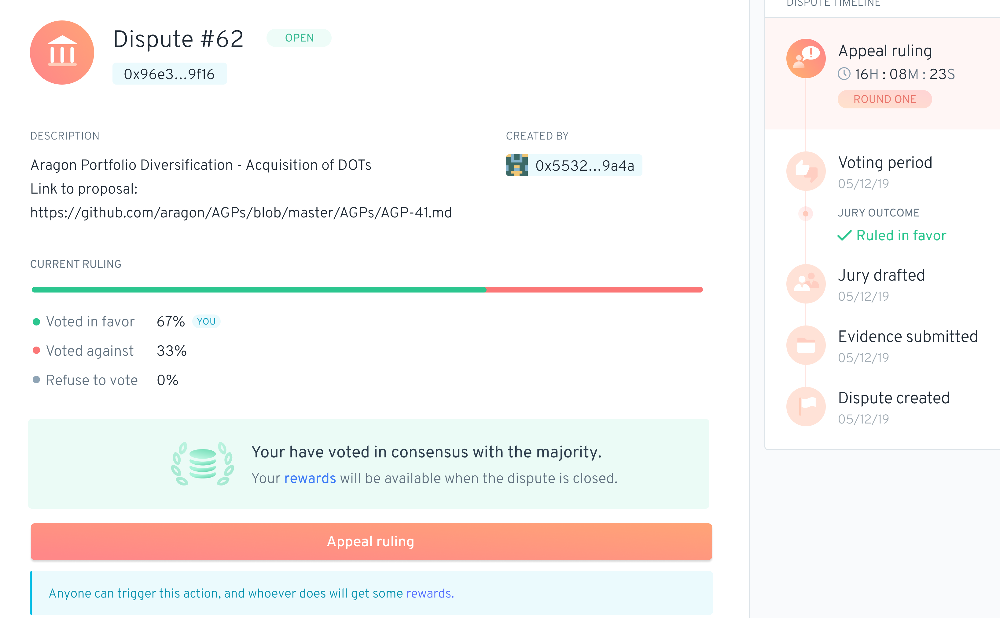

The following guide aims to cover all the information you need to know as a juror to understand the disputes life-cycle and its related tasks so you can have the best experience possible using the Aragon Court Dashboard. For an overview of the Dashboard and its modules, click here.

The Court's main unit of time is called a term, which is currently set to 8 hours. Every time period in the Aragon Court is composed of terms (e.g. the vote commit duration lasts 6 terms, or 2 days). The current term and its remaining time is always displayed at the top of the dashboard.
As for disputes, they essentially observe the following life-cycle:
Disputes can be created by any entity subscribed to the Aragon Court, which currently require a monthly free of 10 DAI.
Once a dispute is created, a time period of 7 days is allowed to submit evidences that will be reviewed by jurors. Evidences can be submitted in text format but HTTP and IPFS links are also accepted.
No action is required by jurors during this period.

After the evidence period is over, the first adjudication round is initiated and the Drafting jury period begins. The only task required during this period is to click on the Draft jury button in the dispute page. Anybody can execute this task and receive a DAI reward proportional to the number of jurors being drafted. The current amount is 0.18 DAI per juror. Pretty neat for a single click action taking a few seconds 😊.
Your chances of being drafted as a juror are directly proportional to your active amount of ANJ.
If you get selected as a juror, here are a few things you need to know:
The exact locked amount can be calculated as follows: 30% of the minimum active balance for each time you get drafted. The minimum active balance is currently 10,000 ANJ, therefore the amount locked would be 3,000 ANJ.
The voting period is critical for a drafted juror. What you must do within the allocated time is first to review the evidences, after which to try anticipating what the voting decision of the juror's majority will be.
This seems counterintuitive at first. The Aragon Court is not exactly functioning like most legacy jurisdiction systems in which every judge is asked for their unbiased opinion. If this would be the case, it would be unfair to penalize the ruling minority. Instead, jurors are incentivize to reach consensus and are rewarded or penalized accordingly.
Most importantly, it is essential to cast a vote since omitting of doing so will penalize the juror. Here are the two steps required to cast a vote:
3.1. Select one of the three voting choices

Three choices are available: voting in favor of the dispute description, voting against it or refusing to vote. You can refuse to vote for many reasons. (e.g. if you consider that the evidences were not conclusive enough or the description was incoherent) In any case, a juror won't get penalized at this stage for selecting any of these options.
3.2. One-time-use code

To keep the votes secret until the end of the voting period, Aragon will hash your vote with a randomly generated code. For security purposes, it's important to save this code somewhere safe.
Enable Court Auto-reveal service is a convenient option available if you want your vote to be revealed automatically during the next phase. Otherwise, a manual action will be necessary.
Click the Commit your vote button to send the transaction.

After the voting period has ended, jurors will have a 2 days to reveal their vote.
If you enabled the Auto-reveal service, there is no action required from you at this stage. Otherwise, simply click on the Reveal your vote button. Your one-time code shouldn't be necessary unless a problem occurred within the court.

Now that the votes are revealed, you can see whether you voted with the majority or not. But before the ruling can be executed, an appeal period is started during which any user can stake DAI to propose an appeal. The amount to stake is currently 30 DAI per drafted juror. When the final ruling is confirmed, the user gets rewarded if the ruling has switched in their favor.
However, an appeal must be confirmed by a second user to officially start a new round. The amount to stake for this second user is 20 DAI per drafted juror.
If an appeal is confirmed, a new adjudication round is initiated and a new jury is drafted. With each new appeal, the number of jurors is multiplied by 3.
Once a ruling has been decided without any appeal, the final ruling is sent to the smart contract that triggered the dispute and all the adjudication rounds for the dispute can be settled taking into account the final ruling for rewards and penalties.
If, as a juror, you voted with the majority of the final ruling, congratulations! You just earned 10 DAI and a percentage of the slashed ANJ from jurors who voted against the majority.
If, however, you voted with the minority, your locked ANJ (currently 3,000 ANJ) is redistributed to the jurors who voted with the consensus.
The maximum number of appeal rounds is not infinite, it is currently set to 4. If an appeal is still confirmed after the maximum allowed is reached, a final round is initiated where all jurors are invited to cast a vote.